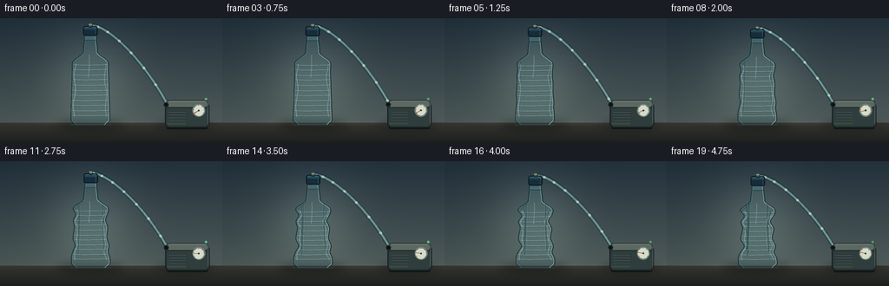
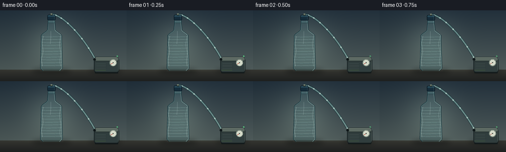
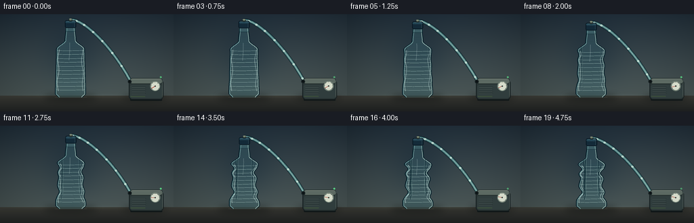
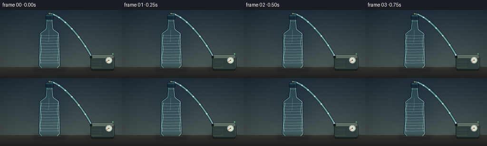

CODING AGENTS AS PIXEL WORLD MODELS
traex/DeepSeek-V4.1-Flash · mechanics_0023
点击播放 · 原生 RGB 像素
逐轮保存的候选
回放视频、检查图与代码变化。
每份候选均可单独播放。实际图片检查记录在下方工具轨迹中。
候选 01播放与检查图
点击播放 · 原生 RGB 像素


展开代码变化
--- 上一保存版本
+++ 本次保存版本
@@ -0,0 +1,452 @@
+from __future__ import annotations
+
+import math
+from pathlib import Path
+
+import numpy as np
+from PIL import Image, ImageDraw, ImageFilter
+
+from artifact_io import save
+
+
+CASE_DIR = Path(__file__).resolve().parent
+WIDTH, HEIGHT = 256, 144
+FRAMES, FPS = 20, 4.0
+SS = 4 # Supersampling factor for clean edges at the small output size.
+
+
+def smoothstep(x: float) -> float:
+ x = max(0.0, min(1.0, x))
+ return x * x * (3.0 - 2.0 * x)
+
+
+def gauss(x: float, center: float, width: float) -> float:
+ return math.exp(-0.5 * ((x - center) / width) ** 2)
+
+
+def mix(a, b, amount):
+ if isinstance(a, tuple):
+ return tuple(round(x + (y - x) * amount) for x, y in zip(a, b))
+ return a + (b - a) * amount
+
+
+def bezier(points, steps=96):
+ """Evaluate a cubic Bezier in two dimensions."""
+ p0, p1, p2, p3 = points
+ out = []
+ for i in range(steps + 1):
+ t = i / steps
+ q = 1.0 - t
+ out.append(
+ (
+ q**3 * p0[0] + 3 * q**2 * t * p1[0] + 3 * q * t**2 * p2[0] + t**3 * p3[0],
+ q**3 * p0[1] + 3 * q**2 * t * p1[1] + 3 * q * t**2 * p2[1] + t**3 * p3[1],
+ )
+ )
+ return out
+
+
+def polygon(draw, points, fill):
+ draw.polygon([(round(x * SS), round(y * SS)) for x, y in points], fill=fill)
+
+
+def line(draw, points, fill, width):
+ draw.line(
+ [(round(x * SS), round(y * SS)) for x, y in points],
+ fill=fill,
+ width=max(1, round(width * SS)),
+ joint="curve",
+ )
+
+
+def ellipse(draw, box, fill, outline=None, width=1):
+ draw.ellipse(
+ tuple(round(v * SS) for v in box),
+ fill=fill,
+ outline=outline,
+ width=max(1, round(width * SS)),
+ )
+
+
+def rounded_rect(draw, box, radius, fill, outline=None, width=1):
+ draw.rounded_rectangle(
+ tuple(round(v * SS) for v in box),
+ radius=round(radius * SS),
+ fill=fill,
+ outline=outline,
+ width=max(1, round(width * SS)),
+ )
+
+
+def bottle_geometry(t: float):
+ """Return bottle profile, height, and cap coordinates at deformation t."""
+ base_y = 123.0
+ body_h = 103.0 * (1.0 - 0.080 * t)
+ neck_y = base_y - body_h
+ center_x = 104.0 + 0.7 * t
+
+ def half_width(u):
+ # Rounded base, gently tapered ribbed body, shoulder, then neck.
+ if u < 0.055:
+ return mix(17.5, 22.2, smoothstep(u / 0.055))
+ if u < 0.69:
+ return mix(22.2, 20.7, smoothstep((u - 0.055) / 0.635))
+ if u < 0.82:
+ return mix(20.7, 8.0, smoothstep((u - 0.69) / 0.13))
+ return mix(8.0, 6.4, smoothstep((u - 0.82) / 0.18))
+
+ def indents(u):
+ body_envelope = smoothstep((u - 0.08) / 0.10) * (1.0 - smoothstep((u - 0.67) / 0.08))
+ left = t * body_envelope * (
+ 5.5 * gauss(u, 0.27, 0.065)
+ + 3.5 * gauss(u, 0.48, 0.060)
+ + 4.3 * gauss(u, 0.63, 0.043)
+ )
+ right = t * body_envelope * (
+ 3.0 * gauss(u, 0.19, 0.050)
+ + 4.6 * gauss(u, 0.38, 0.065)
+ + 5.8 * gauss(u, 0.57, 0.055)
+ )
+ ripple = t * body_envelope * (0.65 * math.sin(31.0 * u + 0.4) + 0.35 * math.sin(53.0 * u))
+ return left + ripple, right - ripple * 0.55
+
+ samples = []
+ for i in range(151):
+ u = i / 150.0
+ y = base_y - u * body_h
+ hw = half_width(u)
+ left_extra, right_extra = indents(u)
+ samples.append((u, y, center_x - hw + left_extra, center_x + hw - right_extra, hw))
+
+ cap_h = 11.0
+ cap_top = neck_y - cap_h
+ return {
+ "base_y": base_y,
+ "body_h": body_h,
+ "neck_y": neck_y,
+ "center_x": center_x,
+ "samples": samples,
+ "cap_top": cap_top,
+ "cap_bottom": neck_y + 1.0,
+ "cap_h": cap_h,
+ }
+
+
+def make_background():
+ img = Image.new("RGB", (WIDTH * SS, HEIGHT * SS), (30, 40, 48))
+ pix = np.asarray(img).copy()
+ yy = np.arange(HEIGHT * SS, dtype=np.float32)[:, None] / SS
+ xx = np.arange(WIDTH * SS, dtype=np.float32)[None, :] / SS
+
+ wall_t = np.clip(yy / 121.0, 0.0, 1.0)
+ top = np.array([31, 45, 56], dtype=np.float32)
+ bottom = np.array([75, 87, 86], dtype=np.float32)
+ wall = (
+ top[None, None, :]
+ + (bottom - top)[None, None, :] * wall_t[:, :, None]
+ + 0.0 * xx[:, :, None]
+ )
+
+ # A soft studio pool behind the bottle gives the transparent edges contrast.
+ glow = np.exp(
+ -(((xx - 105) / 72) ** 2 + ((yy - 70) / 74) ** 2) * 2.0
+ )
+ wall += glow[:, :, None] * np.array([26, 29, 24], dtype=np.float32)
+
+ # Quiet diagonal light variation on the wall.
+ wall += (8.0 * np.clip((xx - 0.38 * yy) / 220.0, -0.4, 0.4))[:, :, None]
+ pix[:] = np.clip(wall, 0, 255).astype(np.uint8)
+
+ floor_mask = np.broadcast_to(yy >= 120.5, pix.shape[:2])
+ floor_t = np.clip((yy - 120.5) / 23.5, 0, 1)
+ floor_col = (
+ np.array([52, 53, 48], dtype=np.float32)[None, None, :]
+ + (np.array([29, 31, 31], dtype=np.float32) - np.array([52, 53, 48], dtype=np.float32))[None, None, :]
+ * floor_t[:, :, None]
+ )
+ pix[floor_mask] = np.broadcast_to(floor_col, pix.shape)[floor_mask]
+
+ # Fine table sheen, kept very low contrast.
+ sheen = np.clip(1.0 - np.abs(yy - 121.3) / 4.0, 0, 1) * np.clip(1.0 - np.abs(xx - 119) / 130, 0, 1)
+ pix = np.clip(pix.astype(np.float32) + sheen[:, :, None] * np.array([10, 11, 9]), 0, 255).astype(np.uint8)
+ return Image.fromarray(pix)
+
+
+def add_soft_shadows(scene: Image.Image, geo):
+ shadow = Image.new("RGBA", scene.size, (0, 0, 0, 0))
+ d = ImageDraw.Draw(shadow)
+ cy = 122.5
+ ellipse(d, (65, cy - 3.2, 143, cy + 5.0), (8, 15, 17, 130))
+ ellipse(d, (78, cy - 1.5, 131, cy + 2.3), (5, 10, 12, 105))
+ ellipse(d, (180, cy - 2.5, 246, cy + 4.5), (8, 14, 16, 125))
+ shadow = shadow.filter(ImageFilter.GaussianBlur(5.0 * SS))
+ return Image.alpha_composite(scene.convert("RGBA"), shadow)
+
+
+def bottle_mask(geo):
+ mask = Image.new("L", (WIDTH * SS, HEIGHT * SS), 0)
+ d = ImageDraw.Draw(mask)
+ samples = geo["samples"]
+ pts = [(x, y) for _, y, x, _, _ in samples] + [(x, y) for _, y, _, x, _ in reversed(samples)]
+ polygon(d, pts, 255)
+ return mask
+
+
+def draw_hose(scene: Image.Image, geo, frame: int):
+ t = frame / (FRAMES - 1)
+ start = (geo["center_x"], geo["cap_top"] - 0.5)
+ # The hose droops and tightens slightly as the cap descends.
+ p1 = (start[0] + 18.0, start[1] - 2.5 + 2.0 * t)
+ p2 = (164.0, 46.0 + 4.0 * t)
+ end = (192.5, 99.0)
+ path = bezier((start, p1, p2, end), 150)
+
+ hose = Image.new("RGBA", scene.size, (0, 0, 0, 0))
+ d = ImageDraw.Draw(hose)
+ line(d, path, (10, 31, 35, 185), 4.7)
+ line(d, path, (82, 137, 137, 120), 3.5)
+ line(d, path, (180, 222, 210, 145), 1.25)
+
+ # Moving air slugs make the extraction direction legible.
+ for i in range(7):
+ phase = (frame / FRAMES * 2.7 + i / 7.0) % 1.0
+ idx = min(len(path) - 2, int(phase * (len(path) - 1)))
+ x, y = path[idx]
+ nx, ny = path[idx + 1]
+ angle = math.atan2(ny - y, nx - x)
+ dx, dy = math.cos(angle) * 2.1, math.sin(angle) * 2.1
+ ellipse(
+ d,
+ (x - 1.6, y - 1.35, x + 1.6, y + 1.35),
+ (210, 246, 232, 170),
+ )
+ line(d, [(x - dx, y - dy), (x + dx, y + dy)], (240, 255, 244, 190), 0.55)
+
+ scene.alpha_composite(hose)
+ return path
+
+
+def draw_pump(scene: Image.Image, frame: int):
+ t = frame / (FRAMES - 1)
+ # Very small vibration sells a running mechanical pump without distracting.
+ jitter_x = 0.18 * math.sin(frame * 4.1)
+ jitter_y = 0.10 * math.sin(frame * 5.3 + 1.2)
+ pump = Image.new("RGBA", scene.size, (0, 0, 0, 0))
+ d = ImageDraw.Draw(pump)
+
+ x0, y0 = 190.0 + jitter_x, 94.5 + jitter_y
+ x1, y1 = 241.0 + jitter_x, 126.0 + jitter_y
+ # Feet and lower casing.
+ rounded_rect(d, (x0 + 2.0, y1 - 2.0, x1 - 2.0, y1 + 1.8), 1.3, (16, 23, 24, 255))
+ rounded_rect(d, (x0, y0 + 2.5, x1, y1), 5.0, (42, 53, 53, 255), outline=(18, 28, 30, 255), width=1.0)
+ rounded_rect(d, (x0 + 1.5, y0, x1 - 1.5, y0 + 8.5), 3.5, (92, 105, 98, 255), outline=(31, 43, 42, 255), width=0.8)
+ rounded_rect(d, (x0 + 2.0, y0 + 9.5, x1 - 2.0, y1 - 2.0), 3.5, (48, 61, 61, 255))
+
+ # Front grille.
+ for i in range(4):
+ yy = y0 + 13.0 + i * 3.1
+ line(d, [(x0 + 4.5, yy), (x0 + 25.0, yy)], (27, 39, 40, 190), 0.75)
+ line(d, [(x0 + 4.5, yy + 0.6), (x0 + 24.0, yy + 0.6)], (102, 119, 110, 75), 0.45)
+
+ # Vacuum gauge; the needle travels clockwise as pressure falls.
+ gx, gy, gr = x1 - 12.2, y0 + 11.8, 7.2
+ ellipse(d, (gx - gr, gy - gr, gx + gr, gy + gr), (24, 31, 31, 255), outline=(130, 146, 133, 255), width=1.0)
+ ellipse(d, (gx - gr + 1.1, gy - gr + 1.1, gx + gr - 1.1, gy + gr - 1.1), (213, 219, 202, 255))
+ for i in range(7):
+ a = math.radians(145 + i * 41.5)
+ line(
+ d,
+ [
+ (gx + math.cos(a) * (gr - 1.6), gy + math.sin(a) * (gr - 1.6)),
+ (gx + math.cos(a) * (gr - 0.6), gy + math.sin(a) * (gr - 0.6)),
+ ],
+ (54, 65, 60, 220),
+ 0.45,
+ )
+ a = math.radians(148 + 48.0 * smoothstep(t))
+ line(d, [(gx, gy), (gx + math.cos(a) * (gr - 1.3), gy + math.sin(a) * (gr - 1.3))], (180, 54, 42, 255), 0.8)
+ ellipse(d, (gx - 0.9, gy - 0.9, gx + 0.9, gy + 0.9), (40, 51, 48, 255))
+
+ # Inlet, LED, and a restrained green status strip.
+ ellipse(d, (188.4 + jitter_x, 96.8 + jitter_y, 194.0 + jitter_x, 102.4 + jitter_y), (25, 35, 36, 255))
+ ellipse(d, (189.6 + jitter_x, 98.0 + jitter_y, 192.8 + jitter_x, 101.2 + jitter_y), (11, 18, 20, 255))
+ led_alpha = 180 + round(45 * math.sin(frame * 1.9))
+ ellipse(d, (235.8, 91.8, 238.4, 94.4), (92, 220, 136, led_alpha))
+ rounded_rect(d, (x0 + 2.5, y1 - 5.2, x0 + 24.0, y1 - 3.6), 0.6, (82, 126, 89, 100))
+
+ # Top highlight and edge reflections.
+ line(d, [(x0 + 5, y0 + 1.2), (x1 - 5, y0 + 1.2)], (196, 202, 181, 105), 0.65)
+ line(d, [(x1 - 1.4, y0 + 4.0), (x1 - 1.4, y1 - 3.2)], (151, 167, 150, 70), 0.7)
+ scene.alpha_composite(pump)
+
+
+def draw_bottle(scene: Image.Image, geo, frame: int):
+ t = frame / (FRAMES - 1)
+ samples = geo["samples"]
+ mask = bottle_mask(geo)
+
+ # Body tint, deliberately translucent so it reads as clear plastic.
+ body = Image.new("RGBA", scene.size, (0, 0, 0, 0))
+ d = ImageDraw.Draw(body)
+ pts = [(x, y) for _, y, x, _, _ in samples] + [(x, y) for _, y, _, x, _ in reversed(samples)]
+ polygon(d, pts, (91, 162, 171, 25))
+ scene.alpha_composite(Image.composite(body, Image.new("RGBA", scene.size, (0, 0, 0, 0)), mask))
+
+ # Cooler interior toward the lower half and a warm reflected edge.
+ tint = Image.new("RGBA", scene.size, (0, 0, 0, 0))
+ td = ImageDraw.Draw(tint)
+ for i, (u, y, left, right, hw) in enumerate(samples):
+ if i % 2:
+ continue
+ amount = smoothstep((0.72 - u) / 0.72)
+ col = (
+ round(mix(100, 48, amount)),
+ round(mix(180, 124, amount)),
+ round(mix(190, 132, amount)),
+ round(9 + 12 * amount),
+ )
+ line(td, [(left + 1.2, y), (right - 1.2, y)], col, 1.05)
+ scene.alpha_composite(Image.composite(tint, Image.new("RGBA", scene.size, (0, 0, 0, 0)), mask))
+
+ # Rim/refraction contours.
+ rims = Image.new("RGBA", scene.size, (0, 0, 0, 0))
+ rd = ImageDraw.Draw(rims)
+ left_path = [(x, y) for _, y, x, _, _ in samples]
+ right_path = [(x, y) for _, y, _, x, _ in samples]
+ line(rd, left_path, (7, 38, 47, 180), 1.35)
+ line(rd, [(x + 0.9, y) for x, y in left_path], (154, 220, 221, 80), 0.55)
+ line(rd, right_path, (10, 42, 50, 190), 1.25)
+ line(rd, [(x - 1.0, y) for x, y in right_path], (207, 239, 229, 125), 0.65)
+ scene.alpha_composite(rims)
+
+ # Ribbed lower body: paired highlight/shadow arcs follow the deforming walls.
+ ribs = Image.new("RGBA", scene.size, (0, 0, 0, 0))
+ ribd = ImageDraw.Draw(ribs)
+ rib_positions = np.linspace(0.105, 0.675, 11)
+ for k, u in enumerate(rib_positions):
+ idx = int(round(u * (len(samples) - 1)))
+ _, y0, left, right, hw = samples[idx]
+ width = max(3.0, right - left)
+ pts_shadow, pts_light = [], []
+ for j in range(41):
+ q = j / 40.0
+ x = left + 1.1 + q * (width - 2.2)
+ curve = 0.75 * math.sin(math.pi * q) + 0.18 * math.sin(2 * math.pi * q + 0.8)
+ pts_shadow.append((x, y0 + curve + 0.35))
+ pts_light.append((x, y0 + curve - 0.35))
+ alpha_shadow = 65 + 18 * (k % 2)
+ line(ribd, pts_shadow, (4, 38, 44, alpha_shadow), 0.52)
+ line(ribd, pts_light, (208, 246, 237, 105 + 14 * (k % 2)), 0.42)
+ scene.alpha_composite(Image.composite(ribs, Image.new("RGBA", scene.size, (0, 0, 0, 0)), mask))
+
+ # Long specular strips near both walls.
+ glints = Image.new("RGBA", scene.size, (0, 0, 0, 0))
+ gd = ImageDraw.Draw(glints)
+ for side, base_off, alpha in [("L", 3.2, 94), ("R", -3.8, 74)]:
+ pts = []
+ for u, y, left, right, hw in samples:
+ if 0.09 <= u <= 0.69:
+ off = base_off + 1.0 * math.sin(u * 19 + (0.5 if side == "L" else 1.2))
+ x = left + off if side == "L" else right + off
+ pts.append((x, y))
+ line(gd, pts, (224, 252, 244, alpha), 0.7)
+ # A short central reflection on the upper body.
+ central = []
+ for u, y, left, right, hw in samples:
+ if 0.53 <= u <= 0.79:
+ central.append((geo["center_x"] - 2.3 + 1.1 * math.sin((u - 0.53) * 8), y))
+ line(gd, central, (231, 252, 246, 62), 0.65)
+ scene.alpha_composite(Image.composite(glints, Image.new("RGBA", scene.size, (0, 0, 0, 0)), mask))
+
+ # Crumple creases become stronger with the applied vacuum.
+ creases = Image.new("RGBA", scene.size, (0, 0, 0, 0))
+ cd = ImageDraw.Draw(creases)
+ crease_specs = [
+ (0.29, 0.19, 0.07, "L"),
+ (0.41, 0.28, -0.05, "R"),
+ (0.51, 0.39, 0.07, "L"),
+ (0.61, 0.49, -0.06, "R"),
+ (0.65, 0.57, 0.04, "L"),
+ ]
+ for u, span, slant, side in crease_specs:
+ idx = int(round(u * (len(samples) - 1)))
+ _, y, left, right, hw = samples[idx]
+ x = left + 2.5 if side == "L" else right - 2.5
+ sign = 1 if side == "L" else -1
+ p0 = (x, y - span * geo["body_h"])
+ p1 = (x + sign * (3.0 * t + 1.0), y - span * geo["body_h"] * 0.48)
+ p2 = (x + sign * (4.0 * t + 1.3), y)
+ p3 = (x + sign * (2.0 * t), y + span * geo["body_h"] * 0.75)
+ curve = bezier((p0, p1, p2, p3), 40)
+ line(cd, curve, (5, 42, 48, round(105 * t)), 0.72 + 0.45 * t)
+ line(cd, [(x + sign * 0.8, yy) for x, yy in curve], (193, 235, 226, round(55 * t)), 0.45)
+
+ # Small fold at the shoulder appears late in the sequence.
+ if t > 0.34:
+ shoulder = []
+ for q in np.linspace(0.0, 1.0, 25):
+ u = mix(0.69, 0.79, q)
+ idx = int(round(u * (len(samples) - 1)))
+ _, y, left, right, hw = samples[idx]
+ shoulder.append((left + 1.5, y + 1.2 * math.sin(q * math.pi)))
+ line(cd, shoulder, (4, 40, 47, round(90 * t)), 0.65)
+ scene.alpha_composite(Image.composite(creases, Image.new("RGBA", scene.size, (0, 0, 0, 0)), mask))
+
+ # Neck collar and cap.
+ neck = Image.new("RGBA", scene.size, (0, 0, 0, 0))
+ nd = ImageDraw.Draw(neck)
+ cx = geo["center_x"]
+ neck_y = geo["neck_y"]
+ rounded_rect(nd, (cx - 7.3, neck_y - 0.8, cx + 7.3, neck_y + 5.5), 2.2, (48, 99, 107, 80), outline=(13, 47, 55, 155), width=0.65)
+ for i in range(4):
+ yy = neck_y + 0.4 + i * 1.3
+ line(nd, [(cx - 6.7, yy), (cx + 6.7, yy)], (186, 231, 224, 62), 0.4)
+
+ cap_top = geo["cap_top"]
+ rounded_rect(nd, (cx - 8.2, cap_top, cx + 8.2, neck_y + 0.2), 2.4, (18, 43, 58, 255), outline=(7, 22, 32, 255), width=0.9)
+ rounded_rect(nd, (cx - 7.4, cap_top + 1.0, cx + 7.4, cap_top + 4.1), 1.6, (36, 72, 88, 255))
+ # Cap ridges.
+ for i in range(9):
+ xx = cx - 6.5 + i * 1.62
+ line(nd, [(xx, cap_top + 3.3), (xx - 0.4, neck_y - 1.1)], (9, 30, 43, 125), 0.42)
+ line(nd, [(cx - 5.6, cap_top + 1.2), (cx + 5.5, cap_top + 1.2)], (137, 180, 184, 120), 0.55)
+ line(nd, [(cx + 5.7, cap_top + 2.4), (cx + 5.7, neck_y - 1.0)], (93, 139, 146, 80), 0.45)
+
+ # Top hose barb.
+ rounded_rect(nd, (cx - 2.5, cap_top - 2.1, cx + 2.5, cap_top + 1.4), 1.2, (59, 71, 65, 255), outline=(16, 29, 32, 255), width=0.7)
+ ellipse(nd, (cx - 2.0, cap_top - 2.7, cx + 2.0, cap_top - 0.7), (128, 139, 118, 255))
+ scene.alpha_composite(neck)
+
+
+def add_foreground_finish(scene: Image.Image, frame: int):
+ t = frame / (FRAMES - 1)
+ finish = Image.new("RGBA", scene.size, (0, 0, 0, 0))
+ d = ImageDraw.Draw(finish)
+ # Faint contact highlights ground the bottle and pump.
+ line(d, [(81, 122.7), (128, 122.7)], (202, 195, 169, 36), 0.55)
+ line(d, [(193, 125.2), (239, 125.2)], (190, 193, 167, 27), 0.5)
+ scene.alpha_composite(finish)
+
+
+def render_frame(frame: int) -> np.ndarray:
+ t_raw = frame / (FRAMES - 1)
+ t = smoothstep(t_raw)
+ geo = bottle_geometry(t)
+ scene = make_background().convert("RGBA")
+ scene = add_soft_shadows(scene, geo)
+ draw_hose(scene, geo, frame)
+ draw_pump(scene, frame)
+ draw_bottle(scene, geo, frame)
+ add_foreground_finish(scene, frame)
+ out = scene.convert("RGB").resize((WIDTH, HEIGHT), Image.Resampling.LANCZOS)
+ return np.asarray(out, dtype=np.uint8)
+
+
+def main():
+ frames = np.stack([render_frame(i) for i in range(FRAMES)], axis=0)
+ save(frames, CASE_DIR)
+ print(f"saved {frames.shape} RGB frames to {CASE_DIR}")
+
+
+if __name__ == "__main__":
+ main()
候选 02播放与检查图
点击播放 · 原生 RGB 像素


展开代码变化
--- 上一保存版本
+++ 本次保存版本
@@ -81,7 +81,7 @@
def bottle_geometry(t: float):
"""Return bottle profile, height, and cap coordinates at deformation t."""
base_y = 123.0
- body_h = 103.0 * (1.0 - 0.080 * t)
+ body_h = 103.0 * (1.0 - 0.095 * t)
neck_y = base_y - body_h
center_x = 104.0 + 0.7 * t
@@ -98,14 +98,14 @@
def indents(u):
body_envelope = smoothstep((u - 0.08) / 0.10) * (1.0 - smoothstep((u - 0.67) / 0.08))
left = t * body_envelope * (
- 5.5 * gauss(u, 0.27, 0.065)
- + 3.5 * gauss(u, 0.48, 0.060)
- + 4.3 * gauss(u, 0.63, 0.043)
+ 7.2 * gauss(u, 0.27, 0.067)
+ + 4.8 * gauss(u, 0.48, 0.058)
+ + 5.5 * gauss(u, 0.63, 0.045)
)
right = t * body_envelope * (
- 3.0 * gauss(u, 0.19, 0.050)
- + 4.6 * gauss(u, 0.38, 0.065)
- + 5.8 * gauss(u, 0.57, 0.055)
+ 4.3 * gauss(u, 0.19, 0.052)
+ + 6.3 * gauss(u, 0.38, 0.063)
+ + 7.3 * gauss(u, 0.57, 0.053)
)
ripple = t * body_envelope * (0.65 * math.sin(31.0 * u + 0.4) + 0.35 * math.sin(53.0 * u))
return left + ripple, right - ripple * 0.55
@@ -147,15 +147,19 @@
+ 0.0 * xx[:, :, None]
)
- # A soft studio pool behind the bottle gives the transparent edges contrast.
+ # Darker backlighting keeps the clear bottle's edges and reflections legible.
glow = np.exp(
- -(((xx - 105) / 72) ** 2 + ((yy - 70) / 74) ** 2) * 2.0
- )
- wall += glow[:, :, None] * np.array([26, 29, 24], dtype=np.float32)
+ -(((xx - 108) / 58) ** 2 + ((yy - 67) / 68) ** 2) * 2.1
+ )
+ wall -= glow[:, :, None] * np.array([15, 12, 8], dtype=np.float32)
# Quiet diagonal light variation on the wall.
wall += (8.0 * np.clip((xx - 0.38 * yy) / 220.0, -0.4, 0.4))[:, :, None]
- pix[:] = np.clip(wall, 0, 255).astype(np.uint8)
+ # A localized vignette separates the pale plastic from the studio wall.
+ vignette = np.clip(
+ 1.0 - 0.16 * (((xx - 128) / 145) ** 2 + ((yy - 66) / 110) ** 2), 0.72, 1.0
+ )
+ pix[:] = np.clip(wall * vignette[:, :, None], 0, 255).astype(np.uint8)
floor_mask = np.broadcast_to(yy >= 120.5, pix.shape[:2])
floor_t = np.clip((yy - 120.5) / 23.5, 0, 1)
@@ -203,9 +207,9 @@
hose = Image.new("RGBA", scene.size, (0, 0, 0, 0))
d = ImageDraw.Draw(hose)
- line(d, path, (10, 31, 35, 185), 4.7)
- line(d, path, (82, 137, 137, 120), 3.5)
- line(d, path, (180, 222, 210, 145), 1.25)
+ line(d, path, (7, 24, 30, 220), 5.2)
+ line(d, path, (75, 143, 145, 170), 3.7)
+ line(d, path, (185, 231, 217, 175), 1.25)
# Moving air slugs make the extraction direction legible.
for i in range(7):
@@ -217,10 +221,10 @@
dx, dy = math.cos(angle) * 2.1, math.sin(angle) * 2.1
ellipse(
d,
- (x - 1.6, y - 1.35, x + 1.6, y + 1.35),
- (210, 246, 232, 170),
- )
- line(d, [(x - dx, y - dy), (x + dx, y + dy)], (240, 255, 244, 190), 0.55)
+ (x - 1.7, y - 1.45, x + 1.7, y + 1.45),
+ (211, 250, 234, 195),
+ )
+ line(d, [(x - dx, y - dy), (x + dx, y + dy)], (245, 255, 245, 215), 0.55)
scene.alpha_composite(hose)
return path
@@ -289,7 +293,7 @@
body = Image.new("RGBA", scene.size, (0, 0, 0, 0))
d = ImageDraw.Draw(body)
pts = [(x, y) for _, y, x, _, _ in samples] + [(x, y) for _, y, _, x, _ in reversed(samples)]
- polygon(d, pts, (91, 162, 171, 25))
+ polygon(d, pts, (84, 167, 177, 37))
scene.alpha_composite(Image.composite(body, Image.new("RGBA", scene.size, (0, 0, 0, 0)), mask))
# Cooler interior toward the lower half and a warm reflected edge.
@@ -313,10 +317,10 @@
rd = ImageDraw.Draw(rims)
left_path = [(x, y) for _, y, x, _, _ in samples]
right_path = [(x, y) for _, y, _, x, _ in samples]
- line(rd, left_path, (7, 38, 47, 180), 1.35)
- line(rd, [(x + 0.9, y) for x, y in left_path], (154, 220, 221, 80), 0.55)
- line(rd, right_path, (10, 42, 50, 190), 1.25)
- line(rd, [(x - 1.0, y) for x, y in right_path], (207, 239, 229, 125), 0.65)
+ line(rd, left_path, (4, 29, 40, 225), 1.55)
+ line(rd, [(x + 1.0, y) for x, y in left_path], (184, 239, 232, 160), 0.75)
+ line(rd, right_path, (5, 31, 41, 225), 1.45)
+ line(rd, [(x - 1.1, y) for x, y in right_path], (223, 251, 237, 185), 0.75)
scene.alpha_composite(rims)
# Ribbed lower body: paired highlight/shadow arcs follow the deforming walls.
@@ -334,22 +338,22 @@
curve = 0.75 * math.sin(math.pi * q) + 0.18 * math.sin(2 * math.pi * q + 0.8)
pts_shadow.append((x, y0 + curve + 0.35))
pts_light.append((x, y0 + curve - 0.35))
- alpha_shadow = 65 + 18 * (k % 2)
- line(ribd, pts_shadow, (4, 38, 44, alpha_shadow), 0.52)
- line(ribd, pts_light, (208, 246, 237, 105 + 14 * (k % 2)), 0.42)
+ alpha_shadow = 82 + 20 * (k % 2)
+ line(ribd, pts_shadow, (3, 30, 39, alpha_shadow), 0.58)
+ line(ribd, pts_light, (219, 251, 240, 126 + 18 * (k % 2)), 0.45)
scene.alpha_composite(Image.composite(ribs, Image.new("RGBA", scene.size, (0, 0, 0, 0)), mask))
# Long specular strips near both walls.
glints = Image.new("RGBA", scene.size, (0, 0, 0, 0))
gd = ImageDraw.Draw(glints)
- for side, base_off, alpha in [("L", 3.2, 94), ("R", -3.8, 74)]:
+ for side, base_off, alpha in [("L", 3.2, 145), ("R", -3.8, 110)]:
pts = []
for u, y, left, right, hw in samples:
if 0.09 <= u <= 0.69:
off = base_off + 1.0 * math.sin(u * 19 + (0.5 if side == "L" else 1.2))
x = left + off if side == "L" else right + off
pts.append((x, y))
- line(gd, pts, (224, 252, 244, alpha), 0.7)
+ line(gd, pts, (229, 255, 247, alpha), 0.85)
# A short central reflection on the upper body.
central = []
for u, y, left, right, hw in samples:
@@ -378,8 +382,8 @@
p2 = (x + sign * (4.0 * t + 1.3), y)
p3 = (x + sign * (2.0 * t), y + span * geo["body_h"] * 0.75)
curve = bezier((p0, p1, p2, p3), 40)
- line(cd, curve, (5, 42, 48, round(105 * t)), 0.72 + 0.45 * t)
- line(cd, [(x + sign * 0.8, yy) for x, yy in curve], (193, 235, 226, round(55 * t)), 0.45)
+ line(cd, curve, (3, 31, 40, round(155 * t)), 0.78 + 0.50 * t)
+ line(cd, [(x + sign * 0.9, yy) for x, yy in curve], (205, 244, 232, round(90 * t)), 0.50)
# Small fold at the shoulder appears late in the sequence.
if t > 0.34:
可观测工具轨迹
实际执行的命令与返回图片。
命令 1exit 0
/bin/bash -c "sed -n '1,240p' prompt.txt"
命令 2exit 0
/bin/bash -c "sed -n '1,260p' GENERATION_RULES.md"
命令 3exit 0
/bin/bash -c 'cat task_spec.json'
命令 4exit 0
/bin/bash -c "find . -maxdepth 2 -type f -not -path './.git/*' -printf '%p\\n' | sort | sed -n '1,200p'"
命令 5exit 0
/bin/bash -c "sed -n '1,260p' artifact_io.py"
命令 6exit 0
/bin/bash -c "sed -n '1,260p' player_template.html"
命令 7exit 0
/bin/bash -c "python - <<'PY'
import importlib.util
for m in ['numpy','PIL','cv2','imageio','scipy']:
print(m, bool(importlib.util.find_spec(m)))
PY"命令 8exit 0
/bin/bash -c 'command -v chafa || true'
命令 9exit 0
/bin/bash -c 'command -v ffmpeg || true'
命令 10exit 0
/bin/bash -c 'command -v jp2 || command -v viu || command -v img2txt || true'
命令 11exit 1
/bin/bash -c 'python generate.py'
命令 12exit 0
/bin/bash -c "nl -ba generate.py | sed -n '118,165p'"
命令 13exit 1
/bin/bash -c 'python generate.py'
命令 14exit 0
/bin/bash -c 'python generate.py'
命令 15exit 0
/bin/bash -c "python - <<'PY'
from PIL import Image
import numpy as np
im=Image.open('inspection.png')
print(im.size)
# print 4 selected frames, one per quarter, at reduced character resolution
for fi in [0,6,13,19]:
a=np.asarray(Image.open(f'frames/{fi:02d}.png').convert('RGB')).astype(float)
# luminance with local contrast stretch
lum=.2126*a[:,:,0]+.7152*a[:,:,1]+.0722*a[:,:,2]
# crop active scene for compact view
lum=lum[5:140]
small=np.asarray(Image.fromarray(lum.astype('uint8')).resize((80,42), Image.Resampling.BOX))
lo,hi=np.percentile(small,[5,95]); n=np.clip((small-lo)/(hi-lo+1e-6),0,1)
chars=' .:-=+*#%@'
print('\\nFRAME',fi)
for row in n:
print(''.join(chars[min(9,int(v*9.999))] for v in row))
PY"命令 16exit 0
/bin/bash -c "python - <<'PY'
from PIL import Image
import numpy as np
for fi in [0,19]:
im=Image.open(f'frames/{fi:02d}.png').convert('RGB').resize((64,36),Image.Resampling.LANCZOS)
a=np.asarray(im)
print('FRAME',fi)
for row in a:
s=''
for r,g,b in row:
s+=f'\\x1b[48;2;{r};{g};{b}m '
print(s+'\\x1b[0m')
PY"命令 17exit 0
/bin/bash -c "python - <<'PY'
import numpy as np
from PIL import Image
from generate import make_background, bottle_geometry, smoothstep, FRAMES
for fi in [0,6,13,19]:
im=np.asarray(Image.open(f'frames/{fi:02d}.png').convert('RGB')).astype(float)
bg=np.asarray(make_background().resize((256,144),Image.Resampling.LANCZOS)).astype(float)
geo=bottle_geometry(smoothstep(fi/(FRAMES-1)))
# center core body
x0,x1=88,120; y0,y1=42,112
delta=im[y0:y1,x0:x1]-bg[y0:y1,x0:x1]
print(fi,'frame mean',im.mean(axis=(0,1)).round(1),'core mean',im[y0:y1,x0:x1].mean(axis=(0,1)).round(1),'bg',bg[y0:y1,x0:x1].mean(axis=(0,1)).round(1),'delta',delta.mean(axis=(0,1)).round(1),'std',im[y0:y1,x0:x1].std(axis=(0,1)).round(1))
# frame diffs
frames=np.stack([np.asarray(Image.open(f'frames/{i:02d}.png')) for i in range(20)]).astype(np.int16)
d=np.abs(np.diff(frames,axis=0))
print('mean abs diff per step',d.mean(axis=(1,2,3)).round(2))
print('changed pixel count >10', (d.max(axis=3)>10).sum(axis=(1,2)))
# width silhouette using color difference from bg
bg=np.asarray(make_background().resize((256,144),Image.Resampling.LANCZOS)).astype(float)
for fi in [0,5,10,15,19]:
im=np.asarray(Image.open(f'frames/{fi:02d}.png')).astype(float)
dd=np.max(np.abs(im-bg),axis=2)
for y in [45,60,75,90,105]:
row=np.where(dd[y,60:155]>12)[0]+60
# contiguous segments
seg=[]
if len(row):
starts=np.r_[0,np.flatnonzero(np.diff(row)>1)+1]; ends=np.r_[starts[1:]-1,len(row)-1]
seg=[(int(row[s]),int(row[e])) for s,e in zip(starts,ends)]
print('f',fi,'y',y,seg)
PY"命令 18exit 0
/bin/bash -c 'python generate.py'
命令 19exit 0
/bin/bash -c "python - <<'PY'
import numpy as np
from PIL import Image
from generate import make_background
bg=np.asarray(make_background().resize((256,144),Image.Resampling.LANCZOS)).astype(float)
frames=np.stack([np.asarray(Image.open(f'frames/{i:02d}.png')) for i in range(20)]).astype(np.int16)
d=np.abs(np.diff(frames,axis=0))
print('mean abs diff:', ' '.join(f'{x:.2f}' for x in d.mean(axis=(1,2,3))))
print('changed >10:', ' '.join(str(x) for x in (d.max(axis=3)>10).sum(axis=(1,2))))
for fi in [0,5,10,15,19]:
im=frames[fi].astype(float)
dd=np.max(np.abs(im-bg),axis=2)
# body only region and active row spans; ignore known hose region above y=45 and pump x>180
print('frame',fi)
for y in [55,70,85,100,115]:
row=np.where(dd[y,65:160]>12)[0]+65
seg=[]
if len(row):
starts=np.r_[0,np.flatnonzero(np.diff(row)>1)+1]; ends=np.r_[starts[1:]-1,len(row)-1]
seg=[(int(row[s]),int(row[e])) for s,e in zip(starts,ends)]
print(' y',y,seg)
# ensure files and metadata
import json, pathlib
print('npz bytes',pathlib.Path('pixels.npz').stat().st_size,'index bytes',pathlib.Path('index.html').stat().st_size)
print(json.load(open('task_spec.json')))
PY"命令 20exit 0
/bin/bash -c "python - <<'PY'
import numpy as np
from PIL import Image
# Generate a cleaner 4x5 inspection sheet with nearest-neighbor previews.
frames=[Image.open(f'frames/{i:02d}.png') for i in range(20)]
sheet=Image.new('RGB',(256*4,144*5),(20,24,28))
for i,im in enumerate(frames): sheet.paste(im,((i%4)*256,(i//4)*144))
sheet.resize((1024,720),Image.Resampling.NEAREST).save('.tmp/review_sheet.png')
# Print motion stats and geometry check, no image output.
a=np.stack([np.asarray(im) for im in frames]).astype(np.int16)
print('unique frames',len({im.tobytes() for im in frames}))
print('mean luminance', [round(float(np.asarray(im).mean()),1) for im in frames])
print('global frame-to-frame MAE', [round(float(np.abs(a[i]-a[i-1]).mean()),2) for i in range(1,20)])
PY"命令 21exit 0
/bin/bash -c "python - <<'PY'
import numpy as np
from PIL import Image
from generate import make_background
bg=np.asarray(make_background().resize((256,144),Image.Resampling.LANCZOS)).astype(float)
for fi in [0,6,13,19]:
im=np.asarray(Image.open(f'frames/{fi:02d}.png').convert('RGB')).astype(float)
print(fi,'mean',im.mean().round(1),'std',im.std().round(1),'p5/p95',np.percentile(im,[5,95]).round(1))
for name,(x0,x1,y0,y1) in {'core':(92,116,45,110),'leftedge':(80,90,50,110),'rightedge':(118,128,50,110),'wall':(140,175,40,110)}.items():
a=im[y0:y1,x0:x1]; b=bg[y0:y1,x0:x1]
print(' ',name,'rgb',a.mean(axis=(0,1)).round(1),'delta',np.abs(a-b).mean().round(1),'std',a.std().round(1))
PY"命令 22exit 0
/bin/bash -c "python -m py_compile generate.py && python - <<'PY'
from pathlib import Path
import hashlib, json
import numpy as np
from PIL import Image
frames = np.stack([np.asarray(Image.open(f'frames/{i:02d}.png').convert('RGB')) for i in range(20)])
assert frames.shape == (20, 144, 256, 3), frames.shape
assert frames.dtype == np.uint8, frames.dtype
packed = np.load('pixels.npz')['pixels']
assert packed.shape == (144, 256, 20), packed.shape
for i in range(20):
v = packed[:, :, i]
decoded = np.stack([(v >> 16) & 255, (v >> 8) & 255, v & 255], axis=-1).astype(np.uint8)
assert np.array_equal(decoded, frames[i]), i
html = Path('index.html').read_text()
assert 'window.__pixelReady=true' in html and '__DATA__' not in html
assert Path('inspection.png').is_file() and Path('transition_check.png').is_file()
print('validated 20x144x256 RGB frames; packed pixels and HTML payload consistent')
for name in ['pixels.npz', 'index.html', 'inspection.png', 'transition_check.png']:
p = Path(name)
print(f'{name}: {p.stat().st_size} bytes')
print('frames sha256:', hashlib.sha256(frames.tobytes()).hexdigest())
PY"命令 23exit 0
/bin/bash -c 'git status --short'
保存候选 2 份；完成命令 23 次；可验证图片返回 0 张。原始 API 响应与完整日志保留在本地。